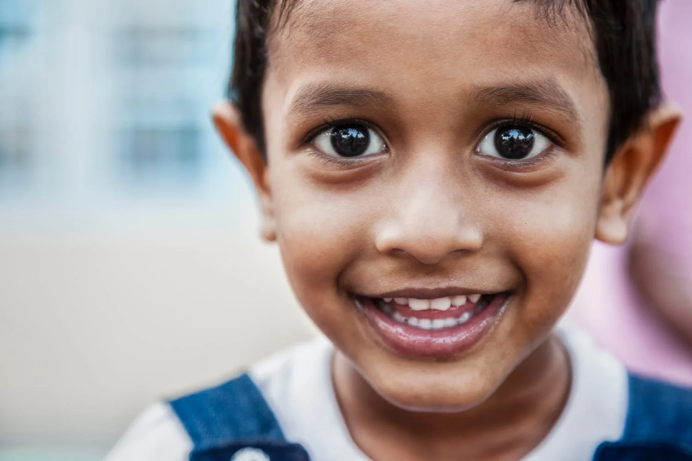
source: Travel Photography GuruSoft portrait
Keep the eyes in focus and use a clean background.
f 2.8 1 250 iso 200starter settings

source: Travel Photography GuruKeep the eyes in focus and use a clean background.
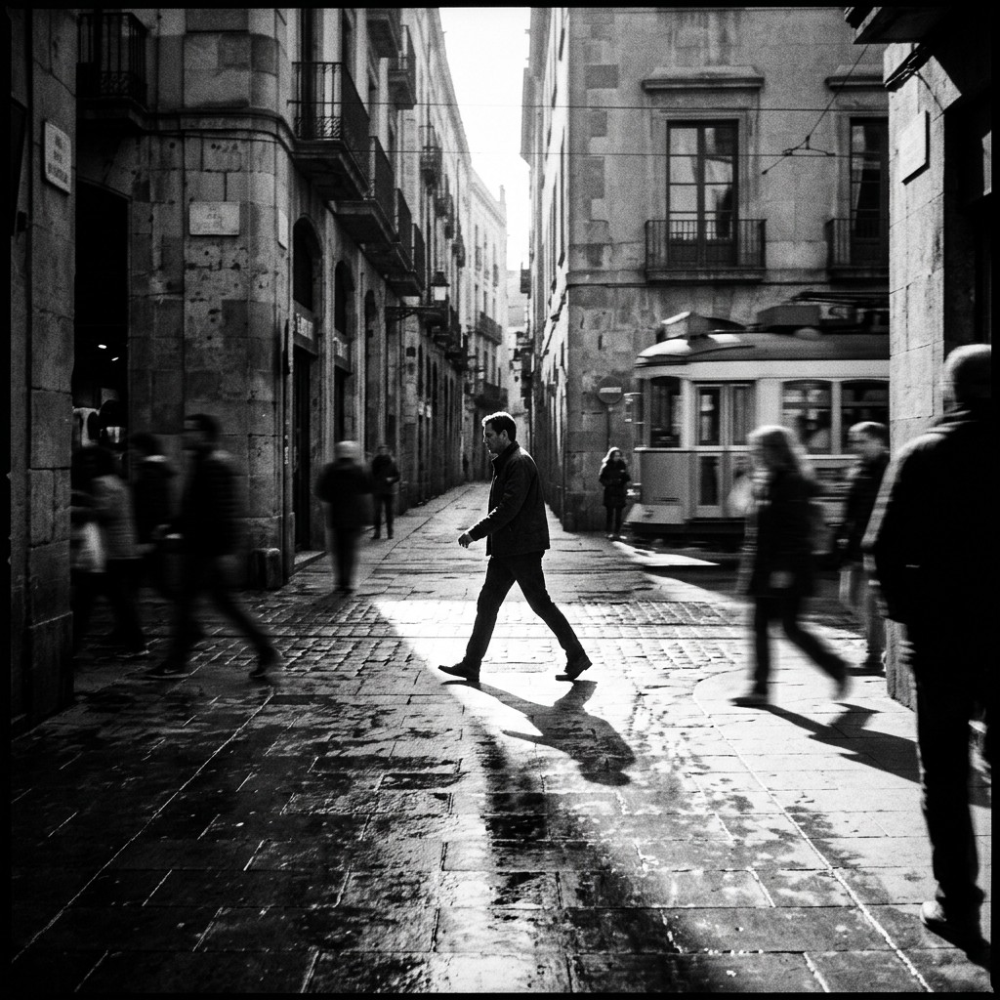
source: StockCakeWait for movement, then keep the subject away from the edge.
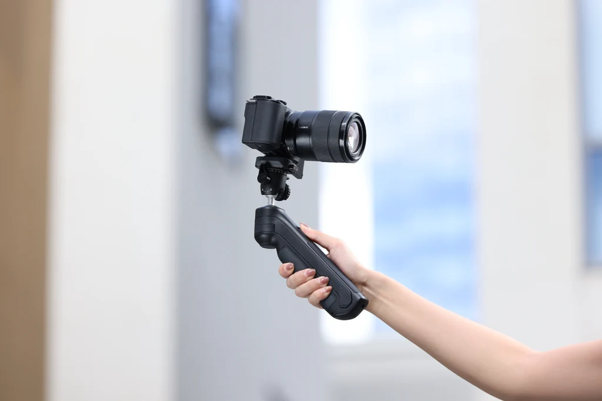
source: UlanziKeep the camera close and leave a little space above your head.
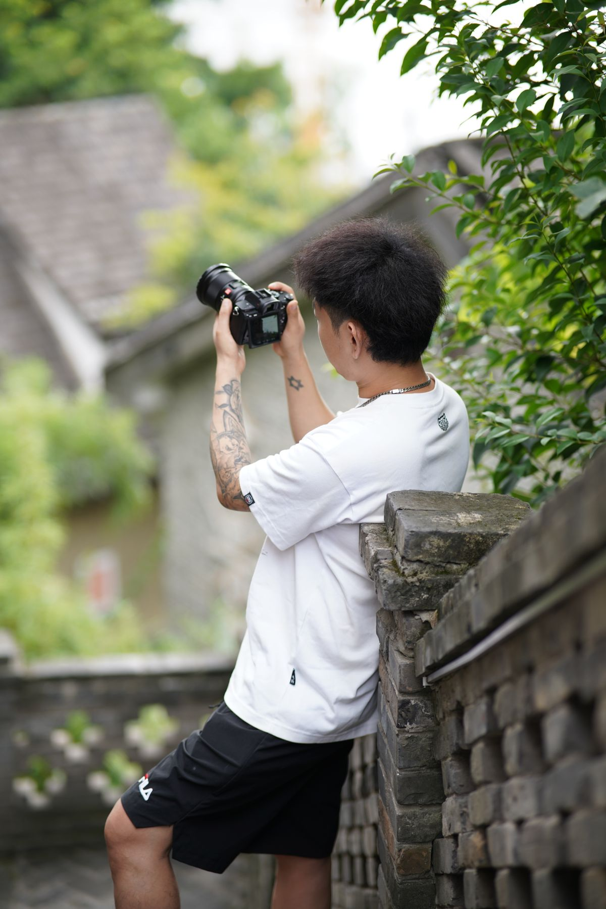
source: Jaqor Q.I. on PexelsShow more of the place and keep the horizon straight.
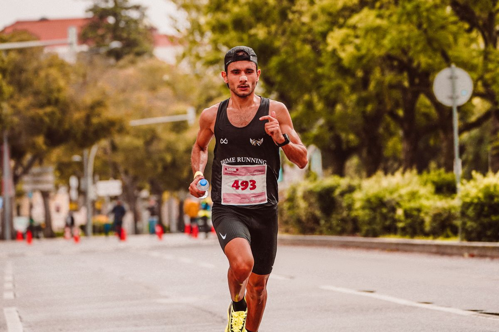
source: RUN 4 FFWPU on PexelsUse a fast shutter and leave space in front of the subject.
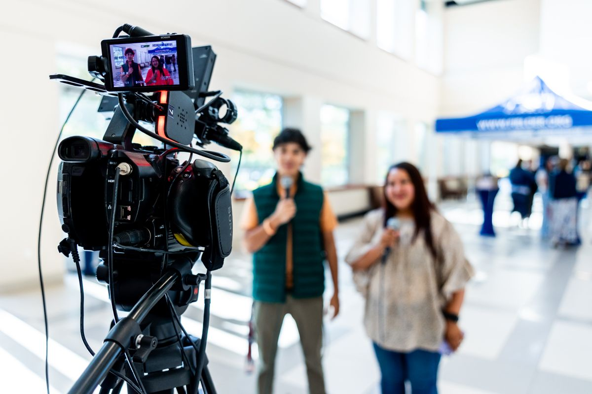
source: Caleb Oquendo on PexelsPlace the subject near a window and keep the camera steady.
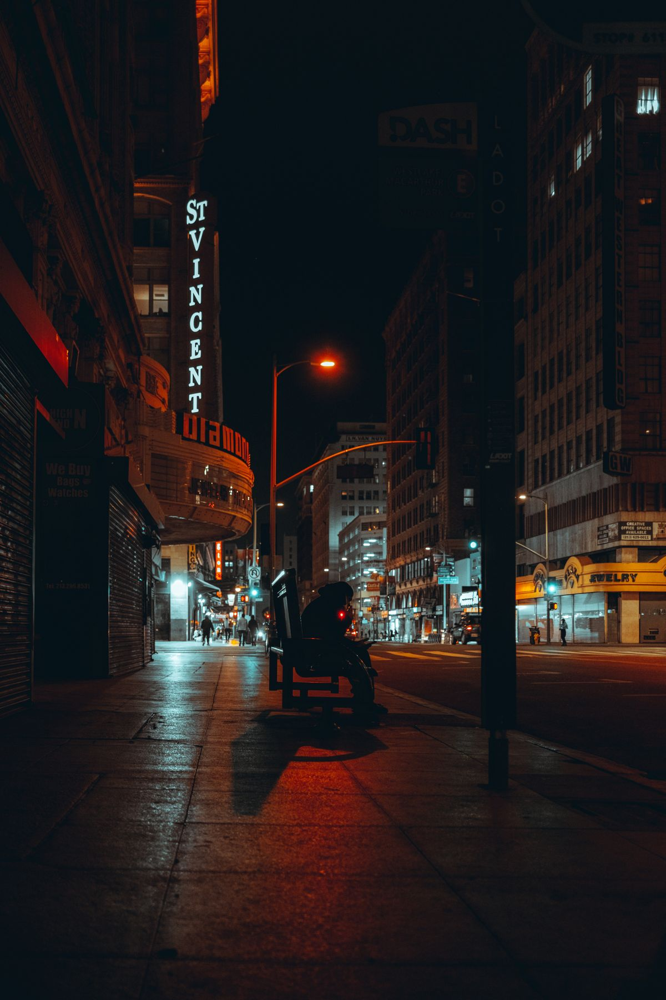
source: Erick Gonzalez on PexelsUse the street lights and hold the camera steady.
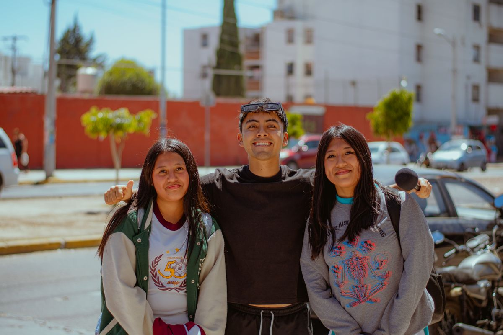
source: Cesar O'neill on PexelsKeep everyone close and focus on the person in the middle.
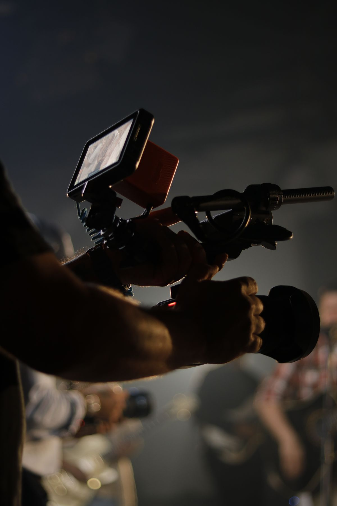
source: Hugo Polo on PexelsShow the camera operator and part of the filming setup.
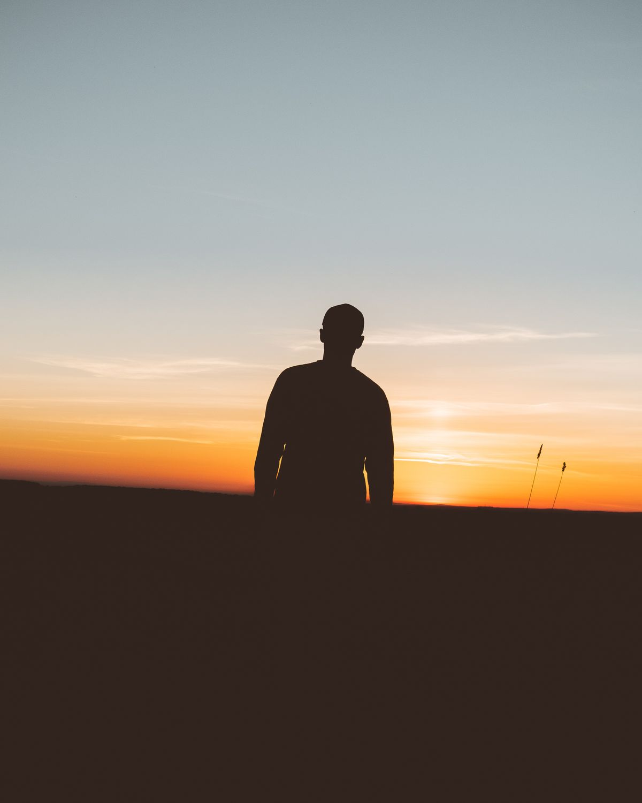
source: Jack Redgate on PexelsPlace the subject in front of the bright sky.
Move closer and focus on one clear part of the subject.
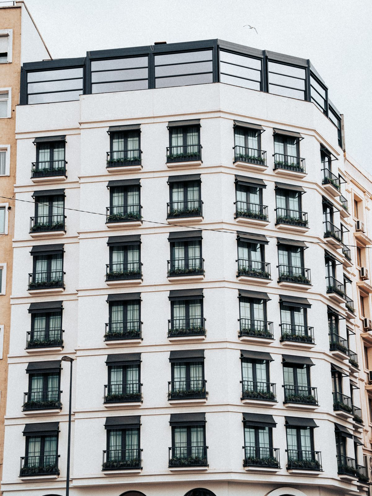
source: Memet Oz on PexelsStand in the center and keep the lines straight.
these settings are only a starting point.
view camera basics